3.1.5 Instalar y configurar Filebeat
1. Introducción
Filebeat es un complemento ligero que se utiliza para recopilar, reenviar y centralizar datos de registro de eventos. Es el módulo Beats más utilizado. Una de las principales ventajas de Filebeat es que ralentiza su ritmo si el servicio Logstash está sobrecargado de datos.
Filebeat se instala como un agente en los servidores de los que recopila registros. Puede reenviar los registros que recopila a Elasticsearch o Logstash para su indexación.
Hay que asegurarse que el servicio Kibana esté activo y funcionando durante el procedimiento de instalación y configuración de Filebeat.
En el siguiente diagrama, se describen las etapas que hay que seguir para la instalación/configuración y puesta en marcha de filebeat.

Figura 0. Diagrama de etapas de la instalación/configuración y puesta en marcha de filebeat.
2. Instalación
Para instalar Filebeat el comando es el siguiente:
root@elastic-master01:/#apt install filebeat
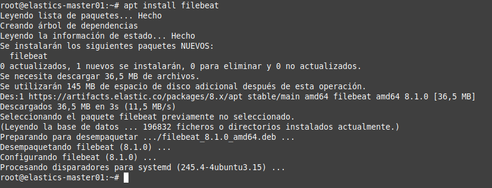
Figura 1. Instalación de filebeat.
Una vez finalizada la instalación, se puede verificar la versión ejecutando:
root@elastic-master01:/#apt-cache policy filebeat
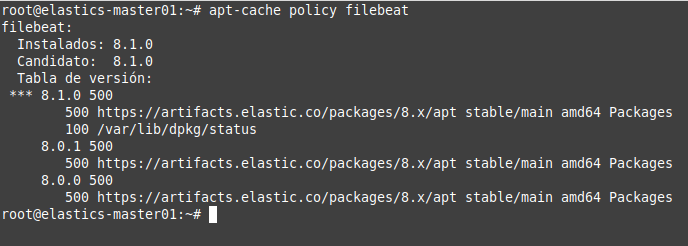
Figura 2. Comprobar la versión de filebeat.
3. Configurar Filebeat 8.1
De forma predeterminada, Filebeat está configurado para enviar datos a Elasticsearch. En el capítulo anterior, se ha configurado Logstash para recibir datos de eventos de Filebeat, por lo que hay que configurar Filebeat para que se conecte a Logstash. Para ello, hay que editar el fichero /etc/filebeat/filebeat.yml y en las secciones output, hay que comentar el output de Elasticsearch y habilitar el output de Logstash como se muestra a continuación:
#output.elasticsearch: # Array of hosts to connect to. # hosts: ["localhost:9200"]
output.logstash:
# The Logstash hosts
hosts: ["localhost:5044"]
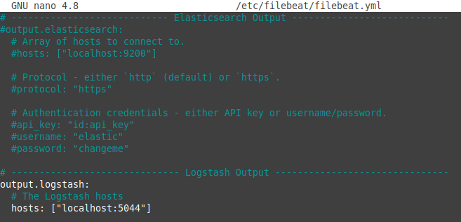
Figura 3. Fichero de configuración de filebeat.
4. Verificar la conexión de salida de Filebeat y su configuración
A continuación para verificar la salida de Filebeat, hay que parar el servicio y luego, hacer el test.
root@elastic-master01:/#systemctl stop filebeat
root@elastic-master01:/#filebeat -e test output
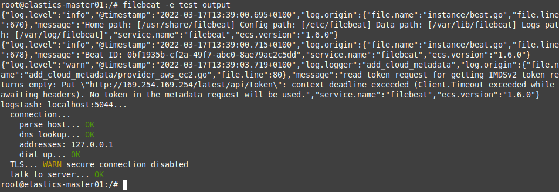
Figura 4. Verificar la conexión de salida de filebeat.
A continuación, se verifica la configuración de Filebeat, el comando es el siguiente:
root@elastic-master01:/#filebeat -e test config
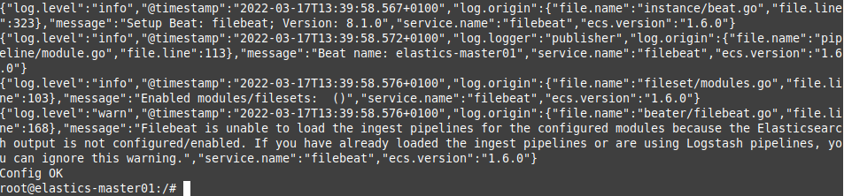
Figura 5. Verificar el fichero de configuración de filebeat.
Si todo está correcto, la salida del comando será 'Config OK'.
5. Habilitar el módulo de sistema de Filebeat
En el capítulo anterior, el filtro Logstash se configuró para analizar los eventos de autenticación del sistema. El módulo del sistema recopila y analiza los registros creados por el servicio de registro del sistema de las distribuciones comunes basadas en Unix/Linux. Este módulo está deshabilitado por defecto. Para enumerar los módulos disponibles, el comando es el siguiente:
root@elastic-master01:/#filebeat modules list
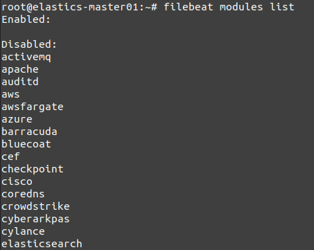
Figura 6. Listar los módulos de filebeat.
A continuación, se habilita el módulo system para capturar los logs del sistema operativo, el comando es el siguiente:
root@elastic-master01:/#filebeat modules enable system
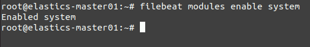
Figura 7. Habilitar el módulo de sistema (system).
Para verificar que el módulo del sistema ha sido habilitado, el comando es:
root@elastic-master01:/#filebeat modules list
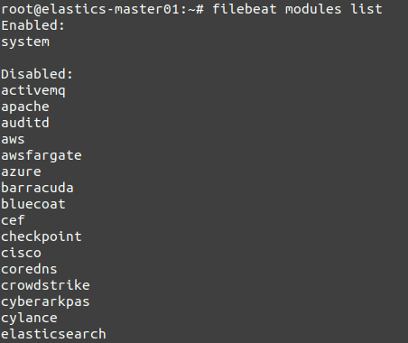
Figura 8. Verificar el módulo system.
Esta operación también se puede realizar consultando el directorio de configuración de módulos. Como se puede observar en la figura inferior, todos los módulos están deshabilitados excepto el system que es el que se acaba de habilitar.
root@elastic-master01:/#ls /etc/filebeat/modules.d/
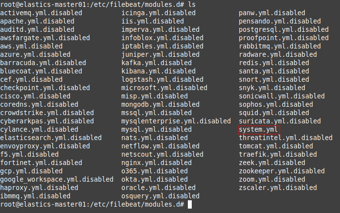
Figura 9. Listar los módulos de filebeat.
Una vez se habilita el módulo system, se consigue activar una plantilla por defecto para la recogida de logs del sistema. Si se abre el fichero en edición, se puede observar que por defecto, se tiene deshabilitado la recogida de syslog y auth.
root@elastic-master01:/#nano /etc/filebeat/modules.d/system.yml
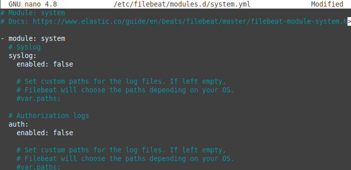
Figura 10. Fichero de configuración por defecto del módulo system.
Si lo que queremos es personalizar la recogida de logs del sistema en vez de utilizar una plantilla predefinida, editaremos el fichero /etc/filebeat/filebeat.yml indicando el path absoluto de los logs que queremos recoger. Por ejemplo, el boot.log.
Dado que en este escenario se quieren recoger los eventos de autenticación por ssh, hay que modificar el módulo del sistema para personalizar la recogida de logs del sistema en vez de utilizar una plantilla predefinida y permitir la lectura de registros de autenticación. Para ello, hay que establecer la sección syslog como false y en var.paths de la sección auth, la ruta del fichero de log, ejemplo: var.paths: ["/var/log/auth.log"]. En caso de dejar vacío el valor de var.paths, filebeat se encargará de elegir la ruta de los ficheros de log para autenticación dependiendo del sistema operativo donde se esté ejecutando.
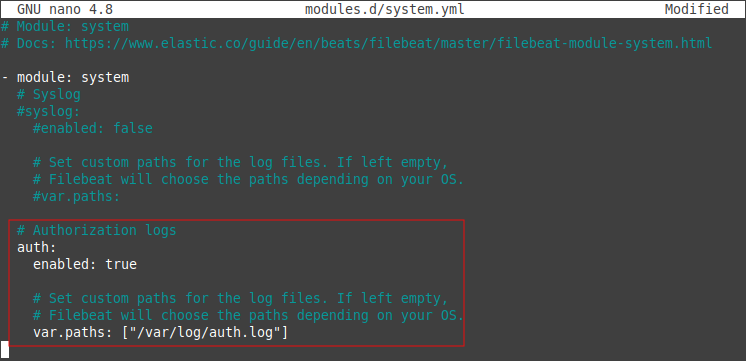
Figura 11. Fichero de configuración modificado del módulo system.
Se puede obtener más información sobre el módulo system aquí.
6. Cargar la plantilla de índice en Elasticsearch
Un índice de Elasticsearch es un conjunto de documentos con características similares. Los índices se identifican con un nombre, que se utiliza para referirse al índice cuando se realizan varias operaciones dentro de este. La plantilla de índice se aplicará de forma automática al crear un nuevo índice.
Para cargar la plantilla de índice en Elasticsearch, debe haber una conexión a Elasticsearch. Dado que en este escenario se usa Logstash como salida, hay que cargar la plantilla en Elasticsearch manualmente. En primer lugar se exporta la plantilla de índice a un fichero al que se le nombra como filebeat.template.json.
root@orion:/etc/filebeat/#filebeat export template > filebeat.template.json
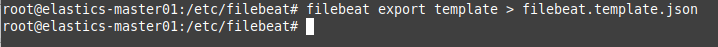
Figura 12. Exportar la plantilla de filebeat.
A continuación, para instalar la plantilla que se acaba de exportar, es decir, el fichero filebeat.template.json, hay que ejecutar el siguiente comando:
root@orion:/etc/filebeat/#curl -XPUT -H 'Content-Type: application/json' --cacert /etc/elasticsearch/certs/http_ca.crt -u \
elastic 'https://elastics-master01:9200/_index_template/filebeat-8.1.0' -d@filebeat.template.json
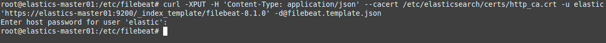
Figura 13. Cargar la plantilla en elasticsearch.
7. Dashboards en Kibana para FileBeat
Por defecto, Filebeat viene empaquetado con dashboards (paneles) de muestra de Kibana que permiten visualizar los datos de Filebeat en Kibana. Para cargar los paneles (dashboards) en kibana, hay que establecer la configuración de kibana para poder hacer la transferencia. Para realizar todo esto, hay que realizar una modificación en el fichero filebeat.yml y ejecutar el comando de carga. En primer lugar, se abre el fichero filebeat.yml en modo edición.
root@elastic-master01:/#nano /etc/filebeat/filebat.yml
En la sección de Kibana, se añade la información del host y puerto a la escucha, es decir, kibana está a la escucha en el puerto 5601 en el servidor elastics-master01. Para establecer la conexión, hay que añadir las credenciales del usuario elastic de elasticsearch y para ello, añaden los parámetros username y password con los valores de las claves que hay que generar previamente en el keystorage de filebeat, de esta manera y por seguridad, no se pondrá el nombre del usuario y la contraseña en claro en el fichero. Por último, se establece el parámetro protocol a http.
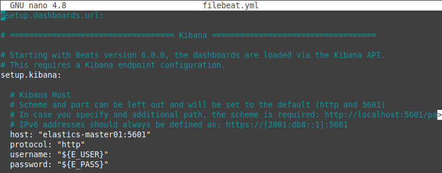
Figura 14. Sección Kibana del archivo filebeat.yml.
Para crear el keystore de filebeat y las claves, los comandos son los siguientes:
root@elastic-master01:/# filebeat --strict.perms=false keystore create --force
root@elastics-master01:/# filebeat keystore add E_PASS
root@elastics-master01:/# filebeat keystore add E_USER
root@elastics-master01:/# filebeat --strict.perms=false keystore list
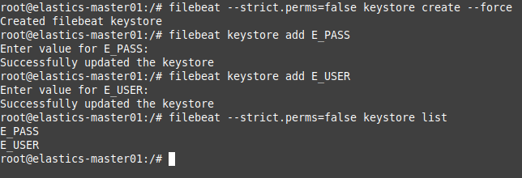
Figura 15. Creación del almacén de claves de filebeat y claves para kibana.
A continuación, hay que ejecutar el comando de carga de los paneles para kibana. De forma predeterminada, el comando importa los dashboards del directorio kibana, que está disponible en el paquete Beat.
root@elastic-master01:/#filebeat setup --dashboards
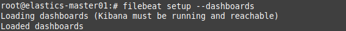
Figura 16. Carga de dashboards en kibana.
Como se puede observar en la figura superior, la carga se ha realizado correctamente.
Referencias:
- Github - JCRequena - Keystore filebeat y carga de dashboards
- https://www.elastic.co/guide/en/beats/filebeat/current/load-kibana-dashboards.html#load-dashboards-logstash
- https://www.elastic.co/guide/en/beats/devguide/8.1/import-dashboards.html
8. Iniciar y habilitar FileBeat
Por último, hay que iniciar y habilitar Filebeat para que se ejecute en el arranque del sistema.
root@elastic-master01:/#systemctl enable --now filebeat
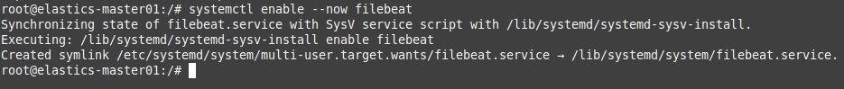
Figura 17. Habilitar e iniciar el servicio filebeat.
Se comprueba el estado de filebeat, donde tiene que aparecer la conexión al puerto 5044 y el path para recoger los logs de autenticación, es decir:
- "message":"Connection to backoff(async(tcp://localhost:5044)) established".
- Configured paths: [/var/log/auth.log]
{kind=link}
Figura 18. Comprobar el estado del servicio filebeat.
9. Verificar la recepción de datos de Elasticsearch y visualización del índice en Kibana
A continuación, hay que realizar un inicio de sesión exitoso y fallido en el sistema con Filebeat instalado. Después de eso, hay que iniciar sesión en el servidor de Elastic Stack y verificar si Filebeat está enviando archivos de registro a Logstash para su procesamiento. Una vez procesados, los datos se envían a Elasticsearch. El comando es el siguiente:
root@elastic-master01:/#curl -X GET --cacert /etc/elasticsearch/certs/http_ca.crt \
-u elastic 'https://elastics-master01:9200/_cat/indices?v'
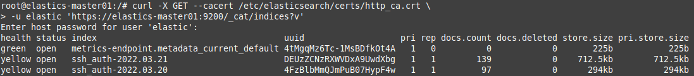
Figura 19. Verificar la recepción de datos de Elasticsearch.
Como se puede ver en la figura superior, el estado de salud del índice ssh_auth-2022.03.21 es amarillo. Esto significa que todos los datos están disponibles, pero algunas réplicas aún no están asignadas; en este escenario, se trata de una implementación de un solo nodo. Se puede observar también en la siguiente sección:
health status index uuid pri rep docs.count docs.deleted store.size pri.store.size
yellow open ssh_auth-2022.03.21 DEUzZCNzRXWVDxA9UwdXbg 1 1 139 0 712.5kb 712.5kb
A continuación, se comprueba el índice ssh_auth-2022.03.20:
root@elastic-master01:/#curl -X GET --cacert /etc/elasticsearch/certs/http_ca.crt \
-u elastic 'https://elastics-master01:9200/ssh_auth-2022.03.21/_search?pretty'
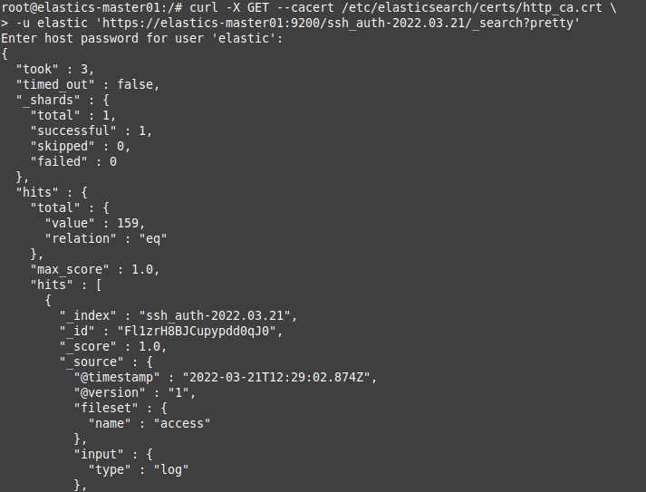
Figura 20. Comprobación del índice ssh creado.
Si en en el resultado no se muestran aciertos (successful), significa que no está cargando ningún registro bajo el índice que se buscó y se deberá verificar la configuración en busca de errores.
En Kibana también se puede ver el índice accediendo a la url:
- http://192.168.0.254:5601/app/management/data/index_management/indices
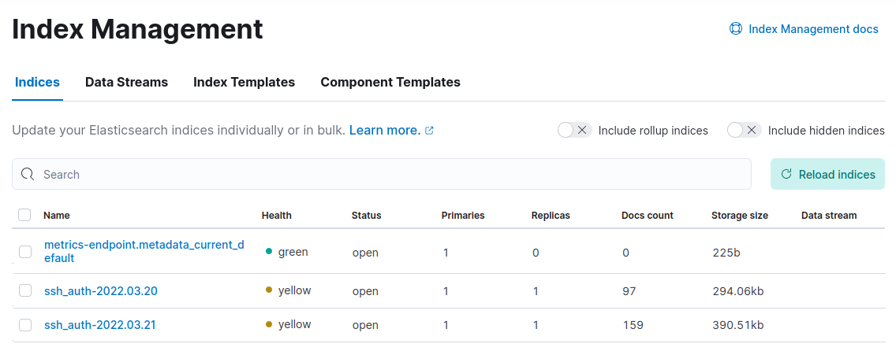
Figura 21. Comprobación del índice ssh creado en Kibana.
Para obtener más detalles sobre los indicadores de estado de salud, se puede consultar la documentación de salud del clúster de Elastic.
El siguiente paso sería la creación de un DataView en Kibana par poder consultar los datos del índice de manera gráfica y tabular. En la siguiente Figura, se puede observar el DataView creado del índice ssh_auth-2022.03.21.
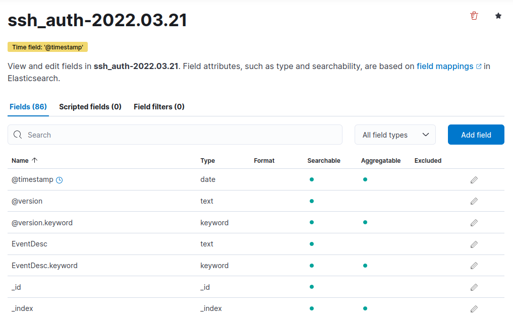
Figura 22. Dataview del índice ssh_auth-2022.03.21.
En el siguiente vídeo, se describe el proceso de creación del DataView para el índice ssh_auth-2022.03.21.
Vídeo 1. Crear DataView del índice ssh_auth-2022.03.21 en Kibana.
10. Referencias
- https://www.elastic.co/guide/en/beats/filebeat/8.1/configuring-howto-filebeat.html
- https://kifarunix.com/install-and-configure-filebeat-7-on-ubuntu-18-04-debian-9-8/
- https://www.elastic.co/guide/en/elasticsearch/reference/8.1/index-mgmt.html
- https://www.elastic.co/guide/en/kibana/current/data-views.html
- https://www.elastic.co/guide/en/beats/filebeat/current/configuration-template.html
- https://qbox.io/blog/logstash-grok-filter-tutorial-patterns
- Gestión de Elastic Stack - Github JC Requena
Obra publicada con Licencia Creative Commons Reconocimiento No comercial Compartir igual 4.0